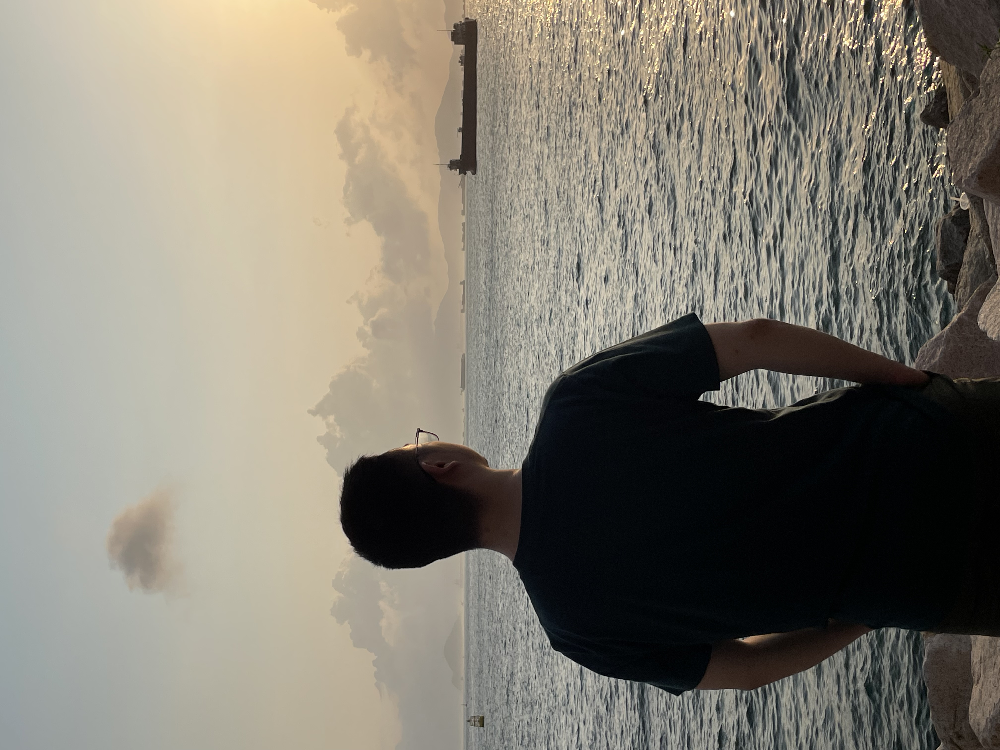

Wenjia Wang (王文佳)
Ph.D Student
The University of Hong Kong (HKU)


Wenjia Wang (王文佳)
Ph.D Student
The University of Hong Kong (HKU)


I'm currently a Ph.D. student (from Jan.2023) in the Department of Computer Science of HKU, supervised by Prof. Taku Komura. I am interested in Human Motion Capture and Synthesis.
I got my B.Eng. from NUAA in 2016, majored in Aircraft Designing. Then I got my M.Sc. degree from Tongji University in 2019, majored in Mechanical Engineering. I worked in Sensetime, Beijing from 2019 to 2020 as a research intern in OCR group lead by Mr. Ding Liang. From 2021 to Mar.2022, I worked as an algorithm researcher in Zoetrope Group (used belongs to X-Lab) in Sensetime, Shenzhen lead by Dr. Lei Yang. I also worked as an algorithm researcher for a short time in Tencent, Shanghai in 2022. After that, I had an internship in Shanghai AI Lab.
My career plan is to become a master in computer animation. In my spare time, I enjoy fitness and boxing. I also have a fondness for strategy and tower defense video games.

Zhongang Cai*, Daxuan Ren*, Ailing Zeng*, Zhengyu Lin*, Tao Yu*, Wenjia Wang*, Xiangyu Fan, Yang Gao, Yifan Yu, Liang Pan, Fangzhou Hong, Mingyuan Zhang, Chen Change Loy, Lei Yang†, Ziwei Liu† (*: equal contribution, †: corresponding author)
ECCV 2022 oral

MMHuman3D is an open source PyTorch-based codebase for the use of 3D human parametric models. It is a part of the OpenMMLab project. It open-sourced in 2021, Dec. I am one of the main contributors, have contributed more than 20K lines of codes.
- Reproducing popular methods with a modular framework
- Supporting various datasets with a unified data convention
- Versatile visualization toolbox